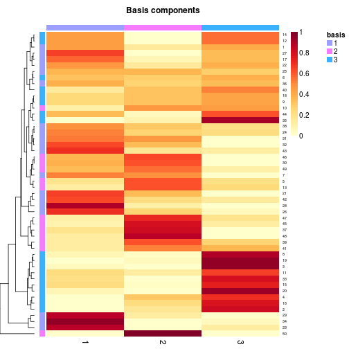
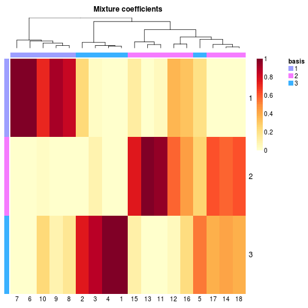

This package provides a framework to perform Non-negative Matrix Factorization (NMF). It implements a set of already published algorithms and seeding methods, and provides a framework to test, develop and plug new/custom algorithms. Most of the built-in algorithms have been optimized in C++, and the main interface function provides an easy way of performing parallel computations on multicore machines.
nmf Run a given NMF algorithm
# generate a synthetic dataset with known classesn <- 50; counts <- c(5, 5, 8);V <- syntheticNMF(n, counts)# perform a 3-rank NMF using the default algorithmres <- nmf(V, 3)basismap(res)
coefmap(res)